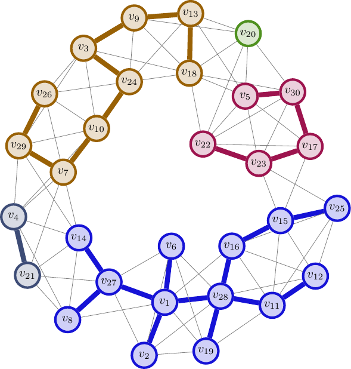

最小生成樹的 Kruskal's 演算法
在 Prim 推出演算法的數年之前，在普林斯頓大學取得博士學位不久的 Kruskal 就已經從翻譯後的 Borůvka 演算法獲得靈感，催生出了更簡單的最小生成樹演算法。Kruskal's 演算法步驟如下：
- 將所有 \(E\) 中的邊依照長度由小至大排序。令排序後的邊為 \(e_1, e_2, \ldots, e_m\)。
- 初始化 \(E'=\emptyset\) 為欲輸出的最小生成樹的邊所成的集合。
- 依序考慮 \(i=1, 2, \ldots, m\)：
- 若 \(E'\cup \{e_i\}\) 不包含任何圈（也就是說 \(e_i\) 連接了 \((V, E')\) 中兩個不同的連通元件），那麼就將 \(e_i\) 加入 \(E'\) 中。
因為今天沒什麼篇幅，就畫一張示意圖表示 Kruskal's 演算法跑到一半的結果吧：

定理 MST.4
若輸入之圖 \(G\) 為連通，且所有邊權重皆不相等，那麼執行完 Kruskal's 演算法後，\(E'=E_{\textit{safe}}\) 包含圖 \(G\) 上所有的安全邊。
定理 MST.4 的證明
首先說明 \(E'\subseteq E_{\textit{safe}}\)。對於每一條被加入 \(E'\) 的邊 \(e_i\)，我們考慮當 \(e_i\) 加入 \(E'\) 的時候的圖 \((V, E')\)。假設 \(e_i=(u, v)\)，定義此時包含 \(u\) 之連通元件對應的點集合為 \(S\)。此時我們宣稱 \(w(e_i) = \min_{e\in \partial S} w(e)\)：這是因為，若在 \(e_i\) 之前有某條邊從集合 \(S\) 連了出去，我們考慮第一條從 \(S\) 連出去的邊 \(e_j=(x, y)\)，假設 \(j < i\)、\(x\in S\) 且 \(y\notin S\)。由於 \(e_j\) 是第一條從 \(S\) 連出去的邊，所以此時 \(x\) 所在的連通元件 \(S_x\subseteq S\)，因此根據演算法的第 3 步，\(e_j\) 一定會被加入 \(E'\) 中。但這時由於 \(j < i\)，當 \(e_i\) 被考慮到的時候，\(S\) 是連通的，因此存在一條路徑從 \(u\) 走到 \(x\)、再透過 \(e_j\) 走到 \(y\)，於是有 \(y\in S\)，矛盾。因此 \(e_i\) 是一條安全邊。
此外，對於任何一條安全邊 \(e\in E_{\textit{safe}}\)，它一定會被演算法在某個時刻考慮到。根據安全邊的定義，存在一個點集合 \(S\) 使得 \(w(e)=\min_{f\in \partial S} w(f)\)。令這條安全邊 \(e=(u, v)\) 且 \(u\in S\)、\(v\notin S\)。當 \(e\) 被演算法考慮到的時候，加上 \(e\) 不會形成圈，因此一定會被加入 \(E'\) 中。於是有 \(E'=E_{\textit{safe}}\)，得證。 \(\square\)
Kruskal's 演算法的實作
檢查某條邊加入 \(E'\) 後會不會形成圈，如果是很直接地使用 DFS/BFS 實作的話，最直接的估計可能會花上 \(O(\vert E'\vert ) = O(n)\) 的時間，因此整體時間複雜度會變成 \(O(mn)\)。
如果我們將當前 \(E'\) 的連通狀況以併查集（disjoint sets）資料結構來表示的話，整體的時間複雜度就會變成 \(O(m\log m + m\alpha(n))\)，其中 \(\alpha(n)\) 是反阿克曼函數，演算法的時間瓶頸便會落在第一步的排序上頭。
參考資料
- Joseph Kruskal, On The Shortest Spanning Subtree of a Graph and the Traveling Salesman Problem, AMS 1956.